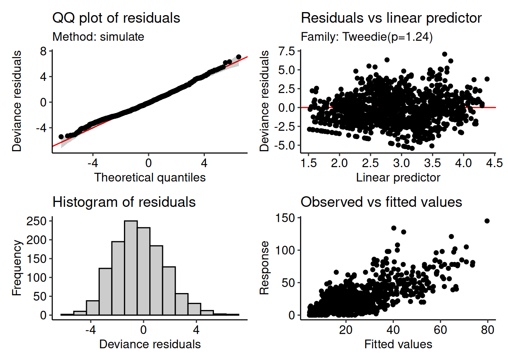
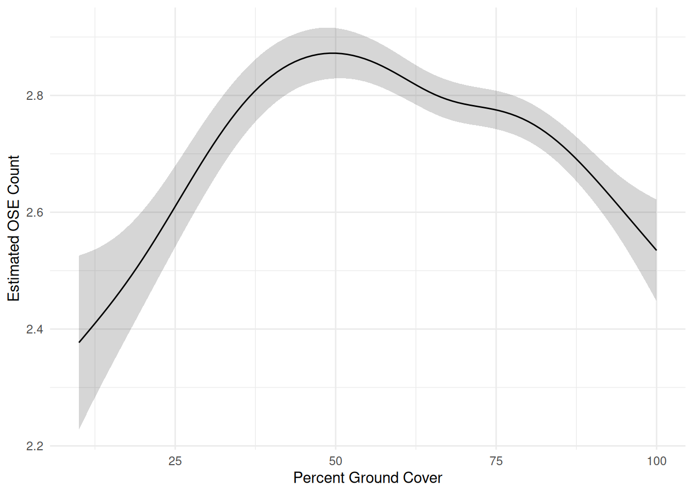
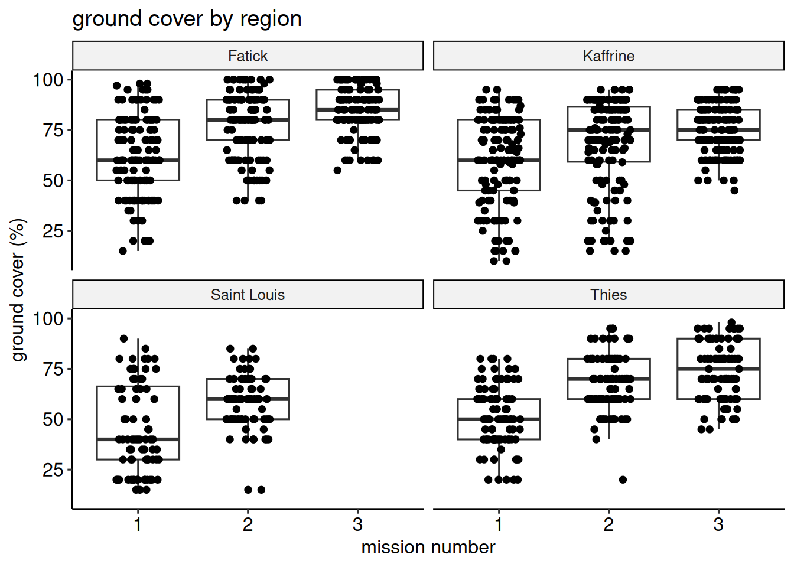
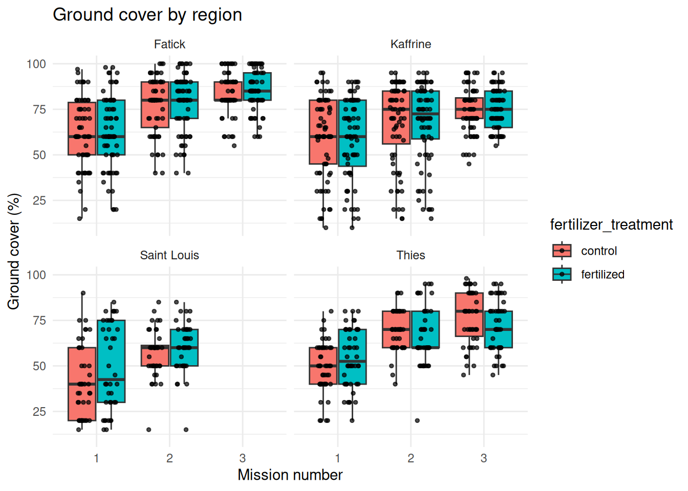
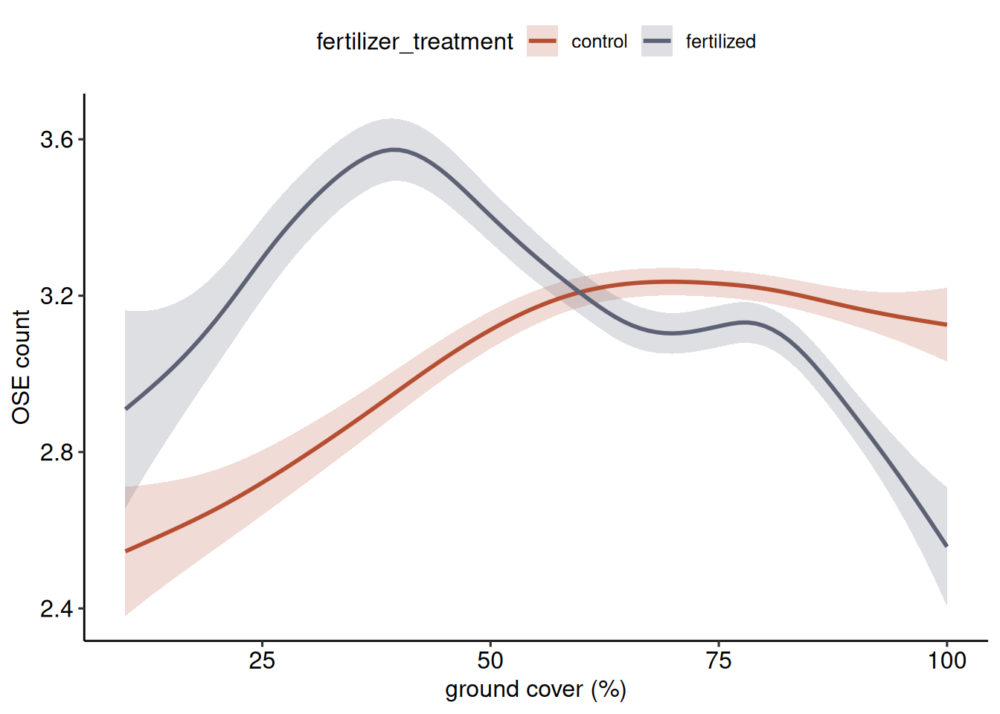

2021 Locust × Ground Cover
We would like to see how density is influenced by ground cover. To do this I am building a generalized additive model (family: tweedie). Following this form:
The generalized additive model (GAM) fitted is:
\[ \begin{align*} \text{ose\_count}_i = \\ &\alpha + \\ &+ f(\text{percent\_ground\_cover}_i,\, \text{region\_treat}_i) + \\ &+ b_{\text{farmer}_i} + \\ &+ \varepsilon_i \end{align*} \]
where:
- \(\alpha\) is the intercept,
- \(f(\text{percent\_ground\_cover},\, \text{region\_treat})\) is a smooth function (tensor product, using factor-smooth interaction) over percent ground cover and region treatment,
- \(b_{\text{farmer}_i}\) is a random effect for each farmer,
- \(\varepsilon_i\) is the residual error.
The model diagnostics look pretty good! I tried to build a poisson model, but the data was overdispersed. Instead I went with a tweedie model which does a pretty good job at handling this type of data:
However, I am not able to reproduce the smooths seen in the manuscript sent to me. This is likely due to data differences as I am not sure what was included in the initial modeling approach. Roughly we can see similiar trends in Kaffrine, Fatick, and Saint Louis. But Thies definitely has a different trend. Additionally, there seems to be different trends between control and fertilized treatments as comapred to the current plots in the manuscript. Not sure what to think here.

GAM model summary
| GAM model Summary: OSE Density x ground Cover | ||||
| Term | Estimated DF | Reference DF | F Statistic | P-value |
|---|---|---|---|---|
New analysis (12/26/2025)
I built a GAM with a Tweedie family and log link to model ose_count. The model includes a smooth for percent ground cover and random effects for region, fertilizer treatment, mission number, and farmer.
The relationship between ground cover and OSE count is non-linear, peaking at around 50% ground cover—OSE numbers are lower at both low and high cover. Region, fertilizer, mission, and farmer all accounted for substantial variation.
Overall, the model explains about 52% of the deviance in the data.
Rows: 1,500
Columns: 9
$ year <dbl> 2021, 2021, 2021, 2021, 2021, 2021, 2021, 2021, 2…
$ region <fct> Kaffrine, Kaffrine, Kaffrine, Kaffrine, Kaffrine,…
$ farmer <fct> 02.51, 02.51, 02.51, 02.51, 02.51, 02.51, 02.52, …
$ farmer_gender <chr> "M", "M", "M", "M", "M", "M", "M", "M", "M", "M",…
$ fertilizer_treatment <fct> control, control, control, fertilized, fertilized…
$ mission_number <fct> 1, 2, 3, 1, 2, 3, 1, 2, 3, 1, 2, 3, 1, 2, 3, 1, 2…
$ ose_count <dbl> 28, 21, 15, 42, 24, 20, 82, 46, 74, 48, 22, 2, 35…
$ percent_ground_cover <dbl> 70, 80, 70, 60, 90, 90, 45, 75, 75, 75, 90, 90, 3…
$ region_treat <fct> Kaffrine_control, Kaffrine_control, Kaffrine_cont…
Here is the final modeled results for the relationship between ose_count and ground cover

ground cover by mission
in general, ground cover increased through the year. It does not really seem theres a big difference between regions.

ground cover by mission and fertilizer treatment

Family: gaussian ( identity )
Formula: percent_ground_cover ~ fertilizer_treatment * mission_number
Data: data
AIC BIC logLik -2*log(L) df.resid
11094.8 11130.9 -5540.4 11080.8 1277
Dispersion estimate for gaussian family (sigma^2): 328
Conditional model:
Estimate Std. Error z value
(Intercept) 54.911 1.210 45.40
fertilizer_treatmentfertilized 2.733 1.694 1.61
mission_number2 13.916 1.720 8.09
mission_number3 23.039 1.815 12.70
fertilizer_treatmentfertilized:mission_number2 -2.270 2.400 -0.95
fertilizer_treatmentfertilized:mission_number3 -2.765 2.528 -1.09
Pr(>|z|)
(Intercept) < 2e-16 ***
fertilizer_treatmentfertilized 0.107
mission_number2 5.99e-16 ***
mission_number3 < 2e-16 ***
fertilizer_treatmentfertilized:mission_number2 0.344
fertilizer_treatmentfertilized:mission_number3 0.274
---
Signif. codes: 0 '***' 0.001 '**' 0.01 '*' 0.05 '.' 0.1 ' ' 1Ground cover wasnt different between fertilizer treatment, but it was between missions (makes sense). There was no interactive effect between fertilizer treatment and mission.
OSE count by ground cover and fertilizer treatment
So agnostic to region, there are
# A tibble: 4 × 3
model_name AIC delta_AIC
<chr> <dbl> <dbl>
1 Smooth by Fertilizer Treatment 9692. 0
2 Linear Interaction 9742. 49.9
3 No Fertilizer Treatment Smooth 9777. 85.1
4 Null Model 10392. 700. So the model with a smooth term for both fertilizer treatments was selected by AIC. This means that fertilizer treatment has an impact on the relationship between ose_count and ground_cover. lets plot out this relationship.

Of all the models tested, the one allowing the effect of ground cover to vary by fertilizer treatment (“smooth by fertilizer treatment”) was the best based on AIC. This means the shape of the relationship between ground cover and OSE count depends on whether the field was fertilized or not.
OSE counts in fertilized plots peak at around 40% ground cover, whereas in controls, the peak shifts to about 60–70%. That suggests fertilizer treatment modifies how OSE respond to ground cover levels perhaps through effects on crop vigor, species composition, or microclimate.
Model selection supports including an interaction between fertilizer and ground cover, highlighting that fertilizer status doesn’t just change overall abundance but alters where OSE are most dense along the ground cover gradient. Simpler models (single smooth, linear interaction, or null) were much less supported. These results justify showing the separate smooths by fertilizer in the main text.